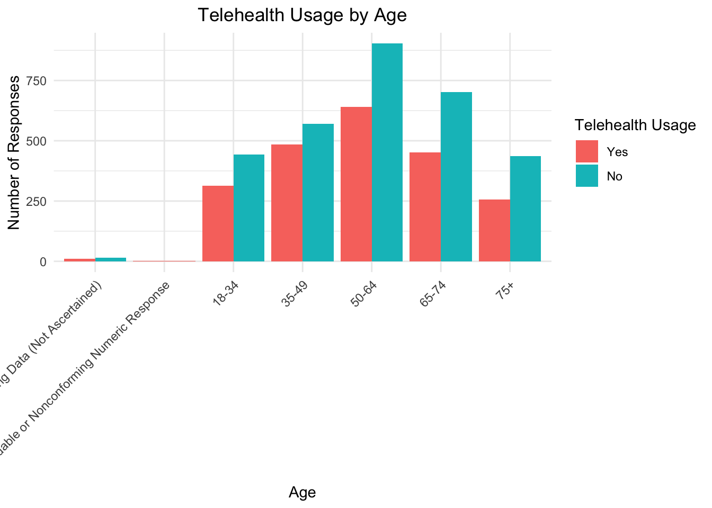
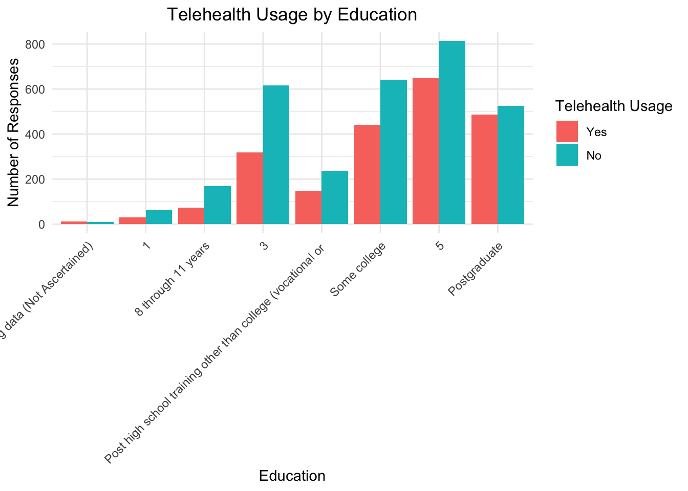
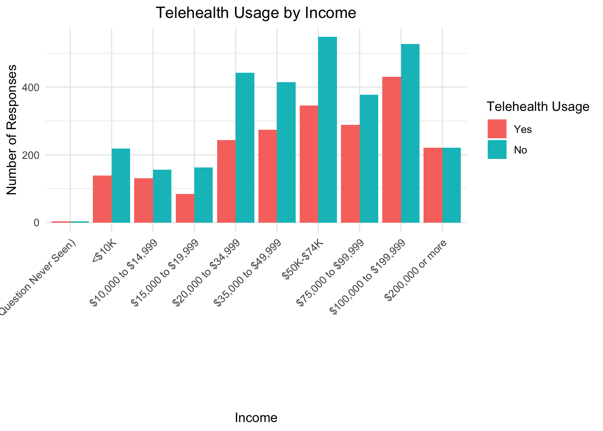
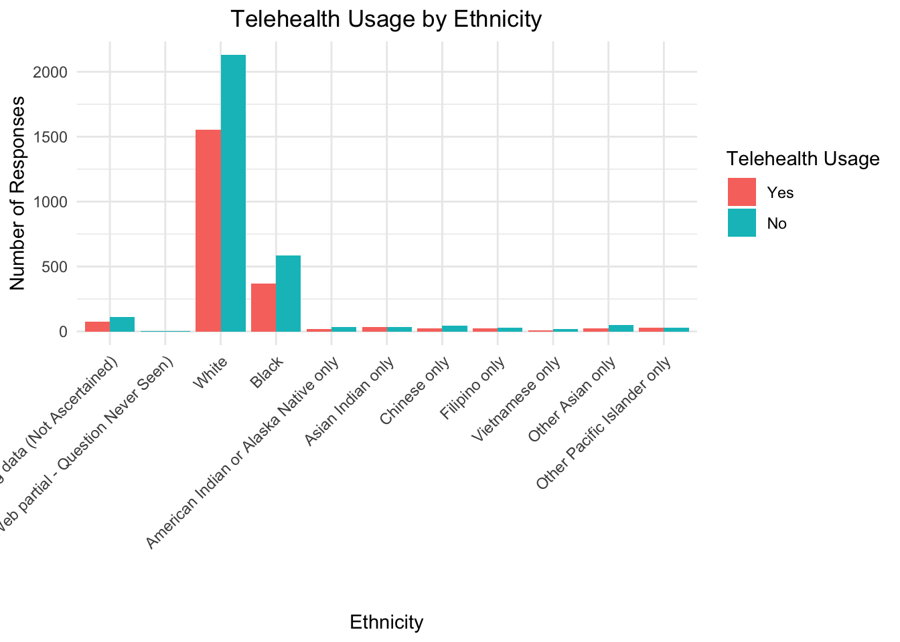

── Attaching core tidyverse packages ──────────────────────── tidyverse 2.0.0 ──
✔ dplyr 1.1.4 ✔ readr 2.1.5
✔ forcats 1.0.0 ✔ stringr 1.5.1
✔ ggplot2 3.5.1 ✔ tibble 3.2.1
✔ lubridate 1.9.3 ✔ tidyr 1.3.1
✔ purrr 1.0.2
── Conflicts ────────────────────────────────────────── tidyverse_conflicts() ──
✖ dplyr::filter() masks stats::filter()
✖ dplyr::lag() masks stats::lag()
ℹ Use the conflicted package (<http://conflicted.r-lib.org/>) to force all conflicts to become errors
library(dplyr)library(tidyr)library(here)
here() starts at /Users/nishi/Desktop/EDLD 651/Final_Proejct
library(rio)library(knitr)library(ggplot2)# Load the filefile_path <-here("data", "hints6_public.rda")load(file_path)# Change the file name to 'hints'hints <- public
# Step 1: Select relevant columns for RQ1health_data <- hints %>%select(AgeGrpB, BirthGender, RACE_CAT2, Education, IncomeRanges, ReceiveTelehealthCare)# Step 2: Recode, rename variables, and handle missing datahealth_data_clean <- health_data %>%mutate(# Recode TelehealthTelehealth =recode( ReceiveTelehealthCare,"No telehealth visits in the past 12 months"="No","Yes, by video"="Yes","Yes, by phone call (voice only with no video)"="Yes","Yes, some by video and some by phone call"="Yes","Missing data (Web partial - Question Never Seen)"=NA_character_,"Missing data (Not Ascertained)"=NA_character_ ),# Recode AgeAge =recode( AgeGrpB,"1"="18-24","2"="25-34","3"="35-44","4"="45-54","5"="55-64","6"="65-74","7"="75+","Missing data (Not Ascertained)"=NA_character_ ),# Recode GenderGender =recode( BirthGender,"Male"="Male","Female"="Female","Multiple responses selected in error"=NA_character_ ),# Recode Education into a 5-point Likert scaleEducation =recode( Education,"Less than 8 years"="1", # Strongly Disagree"8 to 11 years"="2", # Disagree"12 years or completed high school"="3", # Neutral"Some college, no degree"="4", # Agree"Associate degree"="4", # Combine with "Some college, no degree""College graduate"="5", # Strongly Agree"Postgraduate degree"="5", # Combine with "College graduate""Missing data (Web partial - Question Never Seen)"=NA_character_ ),# Recode IncomeIncome =recode( IncomeRanges,"$0 to $9,999"="<$10K","$10,000 to $24,999"="$10K-$24K","$25,000 to $49,999"="$25K-$49K","$50,000 to $74,999"="$50K-$74K","$75,000 and over"=">$75K","Missing data (Not Ascertained)"=NA_character_ ),# Recode EthnicityEthnicity =recode( RACE_CAT2,"White only"="White","Black only"="Black","Hispanic"="Hispanic","Asian only"="Asian","Native American or Alaska Native"="Native American","Multiple races selected"=NA_character_ ) ) %>%# Drop unnecessary columnsselect(-AgeGrpB, -RACE_CAT2, -BirthGender, -IncomeRanges, -ReceiveTelehealthCare) %>%# Remove rows with missing or non-conforming datafilter(!is.na(Telehealth),!is.na(Age),!is.na(Gender),!is.na(Education),!is.na(Income),!is.na(Ethnicity) )# Step 3: Transform data using pivot_longer and pivot_wider# Pivot longer for Age and Ethnicityhealth_data_long <- health_data_clean %>%pivot_longer(cols =c(Age, Ethnicity),names_to ="Variable",values_to ="Value" )# Pivot wider back to the original structurehealth_data_wide <- health_data_long %>%pivot_wider(names_from = Variable,values_from = Value )
Warning: Values from `Value` are not uniquely identified; output will contain list-cols.
• Use `values_fn = list` to suppress this warning.
• Use `values_fn = {summary_fun}` to summarise duplicates.
• Use the following dplyr code to identify duplicates.
{data} |>
dplyr::summarise(n = dplyr::n(), .by = c(Education, Telehealth, Gender,
Income, Variable)) |>
dplyr::filter(n > 1L)
# Step 4: View the cleaned datasethead(health_data_clean)
Education Telehealth Age Gender Income Ethnicity
1 1 No 75+ Male <$10K White
2 5 Yes 50-64 Male $50K-$74K White
3 3 Yes 65-74 Male $35,000 to $49,999 White
4 5 Yes 35-49 Female $50K-$74K Black
5 5 Yes 35-49 Male $200,000 or more White
6 5 No 65-74 Male $100,000 to $199,999 White
# List of demographic variables to visualizedemographic_vars <-c("Age", "Gender", "Education", "Income", "Ethnicity")# Function to create and display ggplot for each demographic variablecreate_telehealth_plot <-function(data, var) {# Remove missing data for the current variable data <- data %>%filter(!is.na(!!sym(var)), !is.na(Telehealth)) # Ensure both the variable and Telehealth are non-missingggplot(data, aes_string(x = var, fill ="Telehealth")) +geom_bar(position ="dodge") +labs(title =paste("Telehealth Usage by", var),x = var,y ="Number of Responses",fill ="Telehealth Usage" ) +theme_minimal() +theme(axis.text.x =element_text(angle =45, hjust =1),plot.title =element_text(hjust =0.5) )}# Loop through each demographic variable and create a plotplots <-lapply(demographic_vars, function(var) {create_telehealth_plot(health_data_clean, var)})
Warning: `aes_string()` was deprecated in ggplot2 3.0.0.
ℹ Please use tidy evaluation idioms with `aes()`.
ℹ See also `vignette("ggplot2-in-packages")` for more information.
# Display the plotsfor (plot in plots) {print(plot)}




The echo: false option disables the printing of code (only output is displayed).